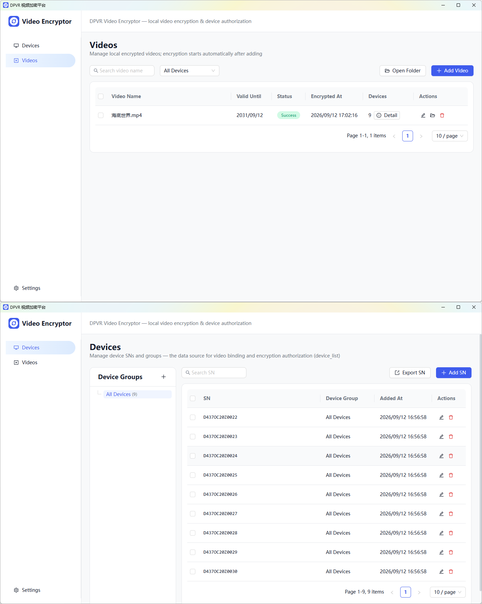

Video Encryption Guide
This guide introduces the features and usage of DPVR Video Encryption Tool V3 in both GUI and CLI versions.
Overview
DPVR Video Encryption Tool V3 is a secure, local video encryption and authorization solution customized for VR headsets.
By importing unencrypted source videos, target VR headset Serial Numbers (SN), and specifying valid playback dates, the tool locally generates frame-by-frame encrypted video content alongside corresponding encrypted license files. Once imported into the VR headset with the matching SN, the content can be decrypted and played back seamlessly. Unauthorized devices—including non-designated headsets, PCs, and smartphones—will be strictly unable to play the content.
GUI Version (Recommended)
Highlights: Features a clean, user-friendly graphical interface with zero command-line overhead.
Key Features: Complete video encryption and license generator.
- Local Device SN Management: Easily register, organize, and manage authorized VR headset SNs.
- Encrypted Video Management: Track and manage encrypted video output logs visually.
- Key & License Management: Centralized management for encryption keys and authorization credentials.
Best For: Interactive workflows, day-to-day operations, and full-featured asset management.
* Note: A detailed user manual is included in the download folder.

CLI Version (Batch Script)
Highlights: Lightweight and headless, powered by pre-configured settings.
Key Features: Focuses purely on core video encryption without UI overhead. Allows users to define parameters in a configuration file and execute encryption via a one-click .bat script.
Best For: Automated CI/CD pipelines, headless server environments, and silent batch processing.
* Note: A detailed user manual is included in the download folder.